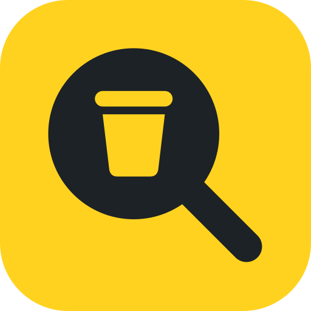

Brand Identity
把消失的垃圾桶找回來。一支放大鏡，鏡片裡是要找的那個桶。
Design Concept
形狀一個實心的放大鏡，桶從鏡片裡鏤空出來。只有兩個元素，輪廓從 512px 到 16px 都認得出來。
鏤空桶不是畫上去的，是缺掉的那一塊，對應「消失的垃圾桶」。放在什麼底色上，桶就透出什麼顏色。
顏色標誌只用墨黑一色，深色底改用白色。品牌的橘紅與亮黃留給介面和 App 圖示底色，不放進標誌本身。
字型文字標用 jf open 粉圓（Huninn）並轉成外框路徑。圓潤的筆畫呼應圓頭把手與桶的圓角，也不依賴使用者電腦上的字型。
Logo Variants

Color Palette
Typography
標題：jf open 粉圓 Huninn Regular，標誌文字已轉外框
內文：Noto Sans TC Regular／Bold。看到滿出來的垃圾桶，掃 QR Code 就能回報。
Developer Reference
/* frontend CSS tokens，與 /entry 一致 */ :root { --ink: #1D2226; --coral: #D2441F; --yellow: #FFD21F; --bg: #F2EFE6; --display: "Huninn", "Noto Sans TC", system-ui; }